Authentication and Hash Functions
Identity, message digests, and SHA-1 · 21 slides · 47 practice questions
Read each original slide, then use the explanation and example to make the idea easier to remember. Review the cheat sheet at the end, then take the quiz.
Open or download the complete lesson PDF
Jump to a slide
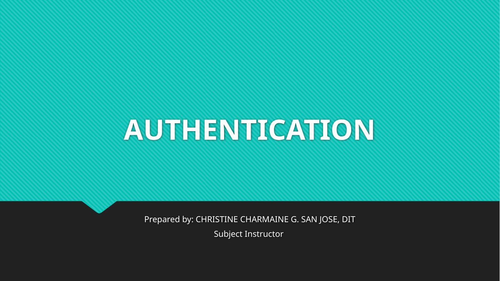
This lesson introduces authentication, hashing, and a worked SHA-1 example.
Example: We will go from what it means to verify a claim to tracing a single hash round.
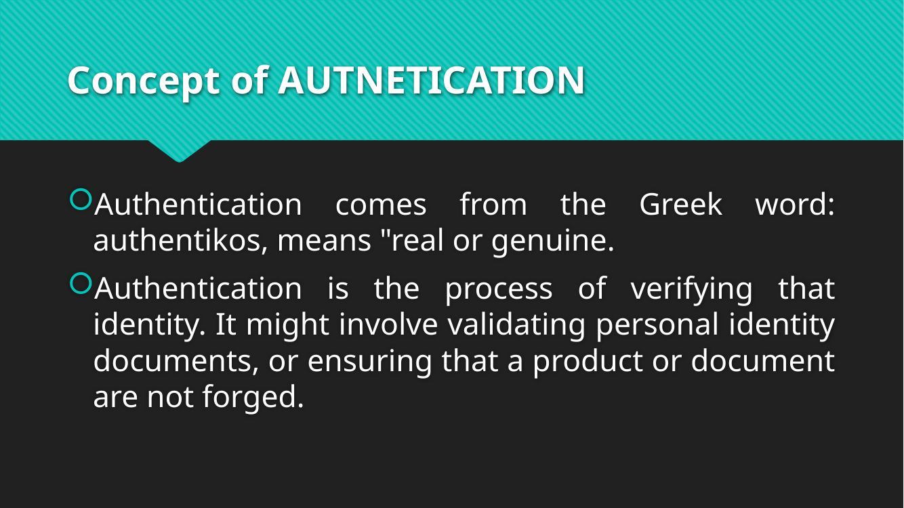
Authentication checks whether a claimed identity or origin is genuine. It is different from authorization, which determines what an identified party may do.
Example: A login checks who you are; access rules determine which files you can open.
- Authentication: The process of checking that a claimed identity or origin is genuine.
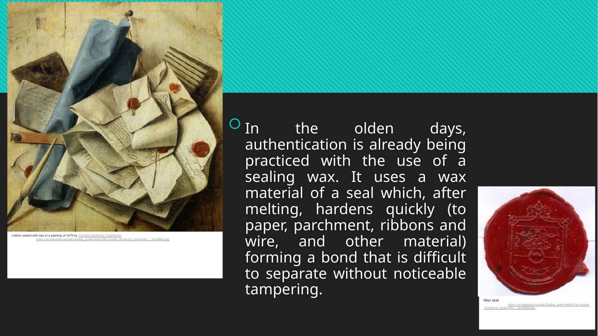
A wax seal was a historical way to make opening a letter visible. A distinctive impression could also be associated with a sender, although seals can be forged.
Example: A broken seal may suggest a letter was opened, but an intact-looking seal is not mathematical proof of authenticity.
- Historical wax seal: A seal could show signs of opening and carry an impression associated with a sender.
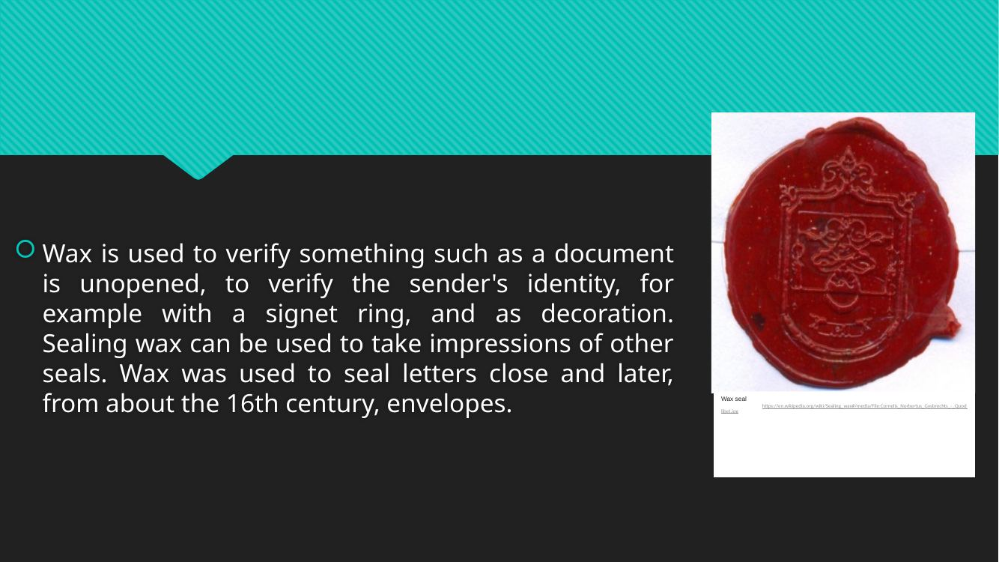
Sealing wax could close letters, show an impression, and provide visible tamper evidence. It is an analogy for checking a message, not a modern cryptographic guarantee.
Example: A signet ring can leave a recognizable mark in wax.
- Tamper evidence: Visible signs that a seal or message may have been altered or opened.
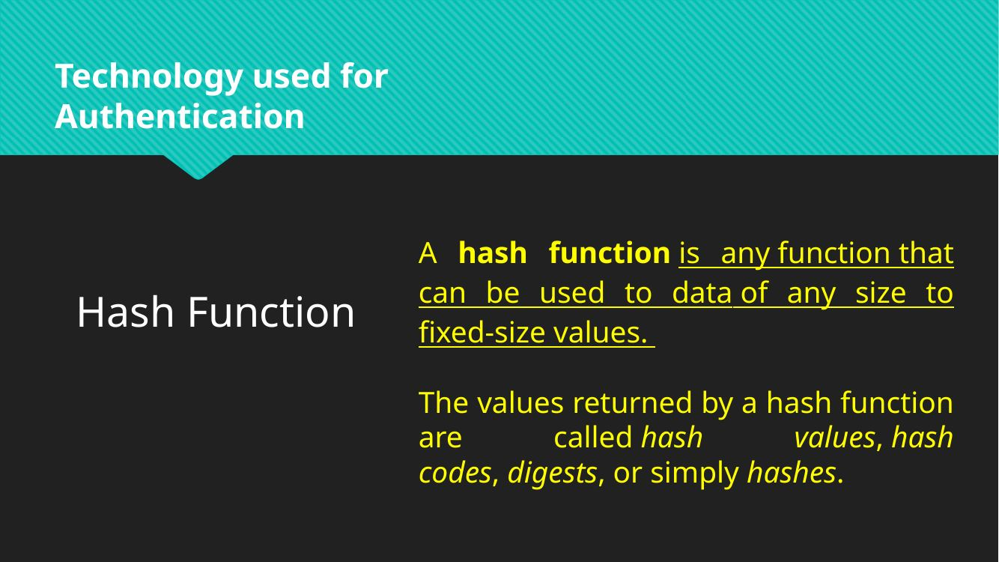
A hash function maps an input to a fixed-length output called a digest. A hash is not encryption: it is not designed to recover the original input.
Example: A long file and a short file both produce a 256-bit SHA-256 digest.
- Hash function: A function that maps input data to a fixed-length digest for a chosen hash algorithm.
- Message digest: The fixed-length output of a hash function, also called a hash value or hash.
- Hashing and encryption: Hashing produces a digest; encryption uses a key and is designed to be reversed by authorized parties.
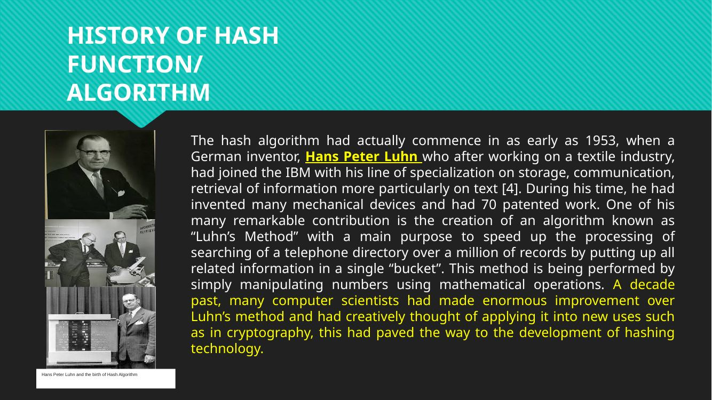
The slide describes early hash-based organization of records and credits Hans Peter Luhn. Hashing also has later applications in cryptography.
Example: A lookup system can use a calculated value to choose a bucket of records.
- Early hashing history: The slide credits Hans Peter Luhn with early hashing work used to organize and search records.
- Hash bucket: A group into which records can be placed to help organize lookup.
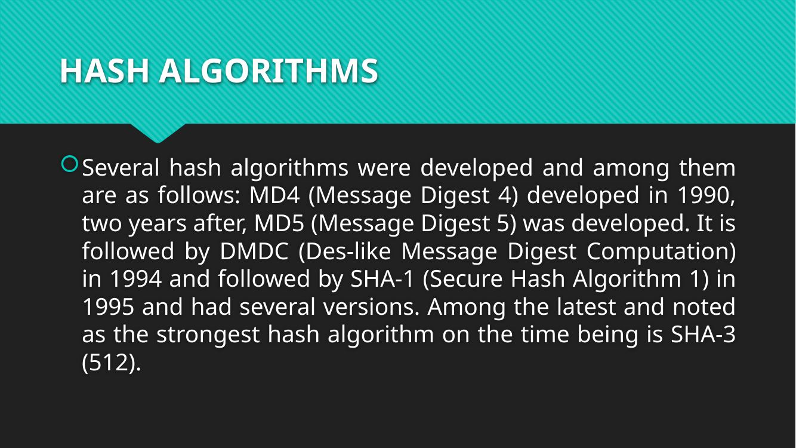
The slides list historical MD4, MD5 and SHA-1 alongside SHA-3. MD4, MD5 and SHA-1 are not suitable for new collision-resistant designs; prefer currently approved algorithms such as SHA-2 or SHA-3.
Example: Knowing an algorithm name is not enough: also check whether it is suitable for the security purpose.
- MD4 and MD5: Historical Message Digest algorithms named in the lesson; MD5 is unsuitable where collision resistance is needed.
- SHA-2 and SHA-3: Families of modern hash algorithms that NIST recommends as alternatives to SHA-1.
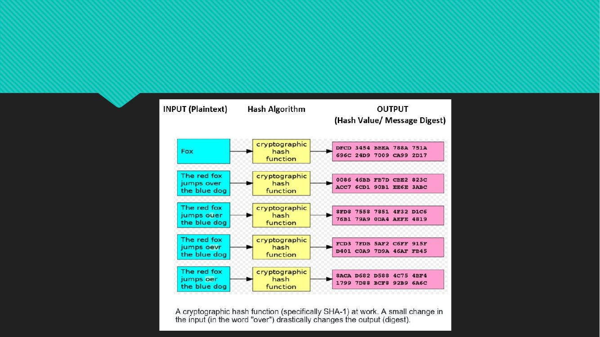
This diagram shows how hashing different inputs can produce very different fixed-length outputs. A small change in input can lead to a large change in the digest.
Example: Changing one letter of a sentence can change many bits of its cryptographic digest.
- Hash sensitivity: A small change in input, including a change in letter case, generally produces a different cryptographic digest.
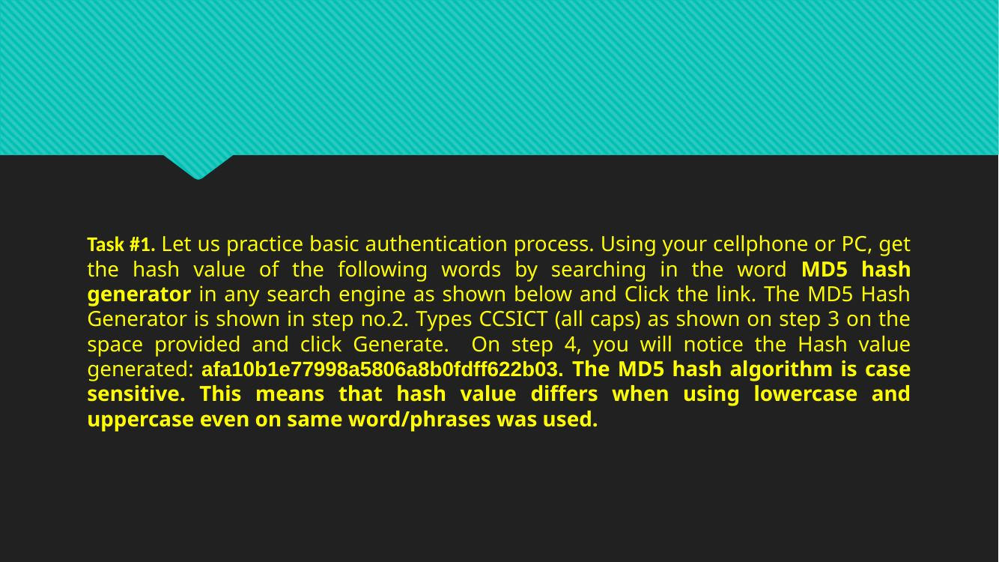
The slide hashes uppercase CCSICT with MD5 and shows a 32-character hexadecimal digest. Uppercase and lowercase have different byte values and therefore are different inputs.
Example: CCSICT and ccsict are different byte sequences. Never paste passwords or confidential documents into public hash-generator websites.
- MD5 case example: The slide's MD5 digest for uppercase CCSICT is afa10b1e77998a5806a8b0fdff622b03.
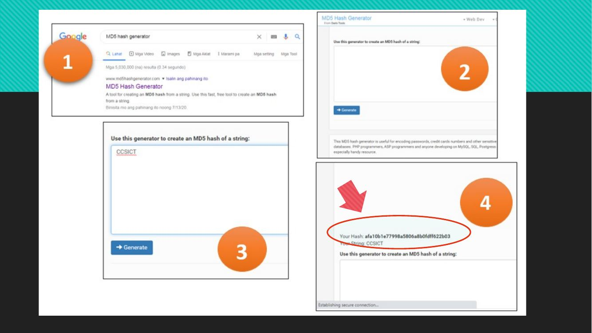
The screenshot illustrates entering text into an MD5 tool and reading its output. Use it to understand input and output, not as a recommendation to use MD5 for security.
Example: A 32-digit hexadecimal MD5 output represents 128 bits.
- MD5 output length: MD5 produces a 128-bit digest, commonly displayed as 32 hexadecimal characters.
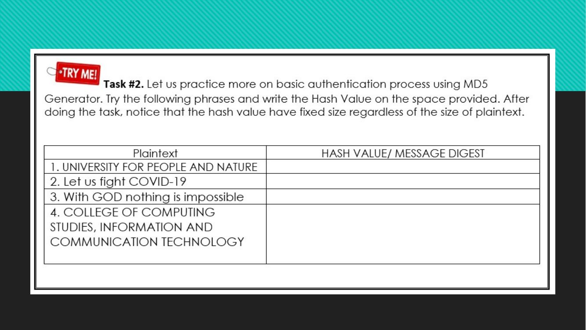
The exercise compares digests for texts of different lengths. For a fixed hash algorithm, the digest length stays constant regardless of the size of the input.
Example: MD5 represents both a short word and a longer paragraph using 128 output bits.
- Fixed-length digest: A particular hash algorithm returns the same output length even when input messages have different lengths.
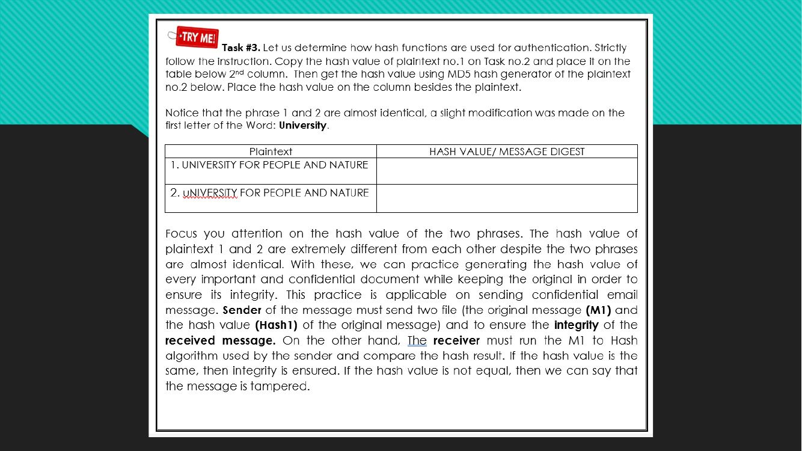
A changed message usually has a different cryptographic hash. However, sending an unkeyed hash alongside a message does not authenticate it: an attacker who can replace both can calculate a new hash. Use a trusted expected digest, HMAC, or a digital signature as appropriate.
Example: If a trusted source publishes a digest separately, you can recompute it to check that a downloaded file matches.
- Input comparison exercise: Comparing hashes of nearly identical messages illustrates that a small change can produce a very different digest.
- Integrity check: Comparing a computed digest against a trusted expected digest can reveal accidental or intentional changes.
- Authenticated integrity: An HMAC or digital signature can protect message integrity and help authenticate the source when keys are managed correctly.
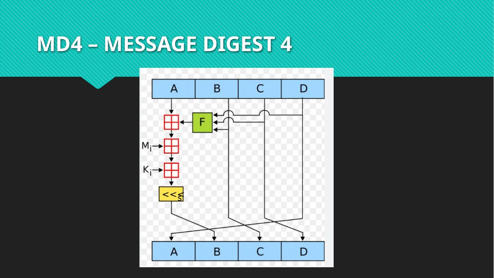
MD4 means Message Digest 4. It is an older hash algorithm included for historical context and is not suitable for modern collision-resistant security.
Example: Treat the algorithm name as a historical term for this lesson.
- MD4 meaning: MD4 stands for Message Digest 4 and is an older hash algorithm.
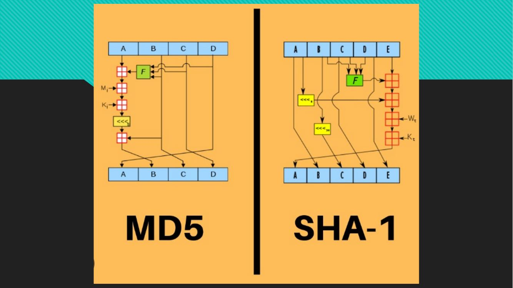
The image is a reference to research on diffusion and hashing. Diffusion means changes to the input spread through the output; it is one desirable property, not a complete security proof.
Example: A single input-bit change may affect many output bits.
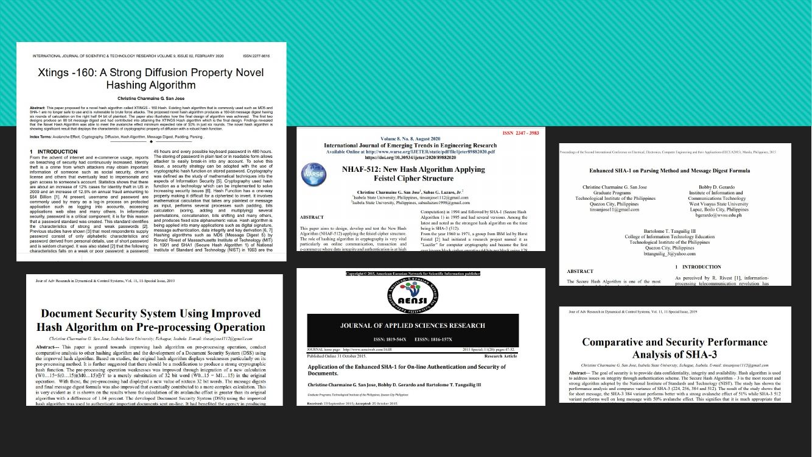
The slide lists research on hash algorithms and document authentication. When studying a proposal, ask about the security claim, threat model, and independent analysis.
Example: A paper title alone does not prove that an algorithm is safe for production.
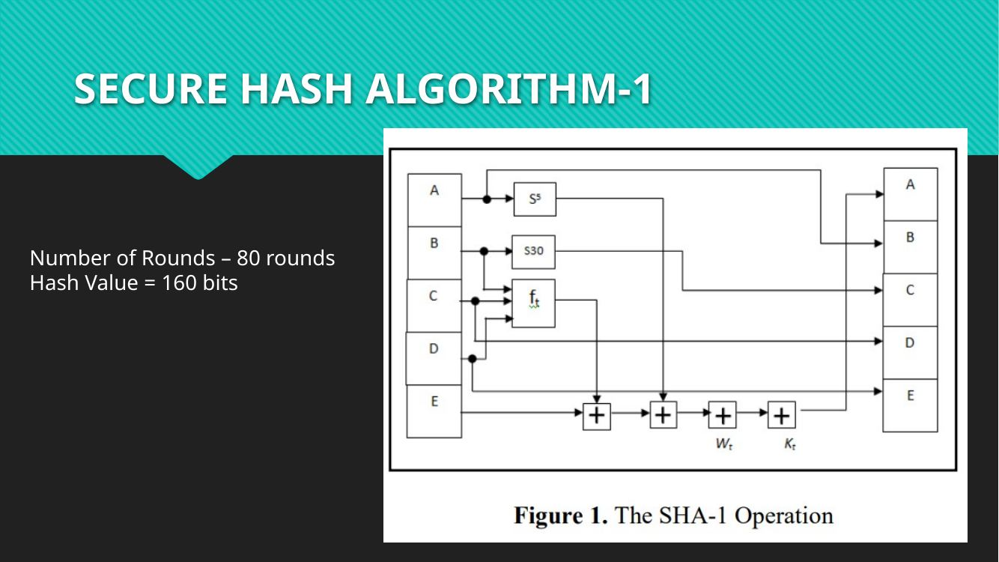
SHA-1 produces a 160-bit digest and uses 80 rounds for each 512-bit block. It is useful to learn historically, but collision attacks mean it should not be chosen for new collision-resistant uses.
Example: A 160-bit digest has 20 bytes, usually shown as 40 hexadecimal characters.
- SHA-1: A historical cryptographic hash algorithm producing a 160-bit digest and using 80 rounds per block.
- SHA-1 digest size: SHA-1 outputs 160 bits, equivalent to 20 bytes or 40 hexadecimal digits.
- SHA-1 security status: SHA-1 has collision weaknesses; NIST recommends transitioning to SHA-2 or SHA-3.
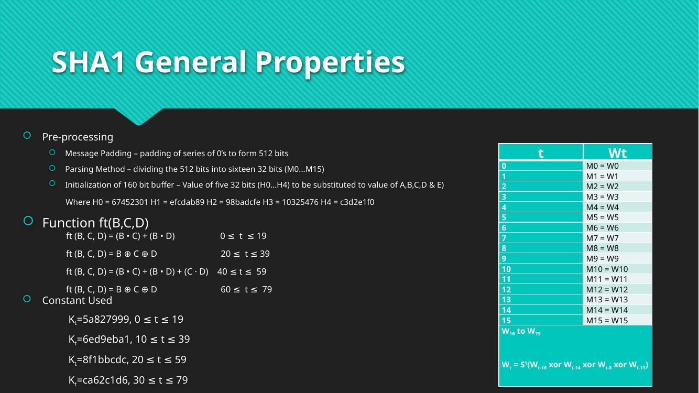
SHA-1 pads the message, divides each 512-bit block into sixteen 32-bit words, and expands them into an 80-word schedule. The slide contains errors: the schedule uses W[t−3], not W[t−13], and the first function uses NOT B. The printed constant ranges also contain typos.
Example: For t=16, W16 = ROTL1(W13 XOR W8 XOR W2 XOR W0). See the SHA standard linked below.
- SHA-1 block size: SHA-1 processes padded messages in 512-bit blocks.
- SHA-1 initial words: SHA-1 starts with five 32-bit state words, often named H0 through H4 or A through E.
- SHA-1 initial parsing: A 512-bit message block is parsed into sixteen 32-bit words before the schedule is expanded.
- SHA-1 padding: Append a 1 bit, then zero bits, then the original message length encoded in 64 bits to reach a multiple of 512 bits.
- SHA-1 schedule expansion: For t from 16 to 79, W[t] is a one-bit left rotation of W[t-3] XOR W[t-8] XOR W[t-14] XOR W[t-16].
- SHA-1 round function: The round function changes across four 20-round ranges; the first uses (B AND C) OR ((NOT B) AND D).
- SHA-1 constants: Each of four SHA-1 round ranges uses a specified constant, beginning with 5a827999 for rounds 0–19.
- SHA-1 schedule note: The lecture's printed schedule and first-round function contain typos; use the standard formulas in the explanation.
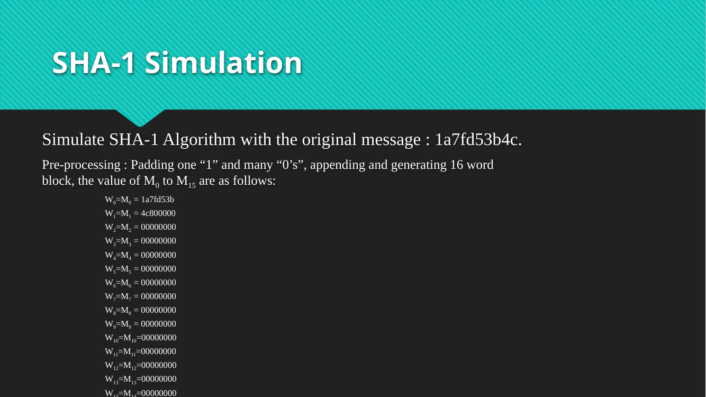
The worked example is the five-byte hexadecimal message 1a7fd53b4c. SHA-1 adds a 1 bit, zeros, and the original length as a 64-bit number; 0x28 represents 40 bits.
Example: The first two message words are 1a7fd53b and 4c800000; the last word holds 00000028.
- SHA-1 worked message: The sample hexadecimal message 1a7fd53b4c is five bytes, or 40 bits long.
- SHA-1 padded sample: For the sample message, W0 is 1a7fd53b, W1 begins 4c800000, and the final length word is 00000028.
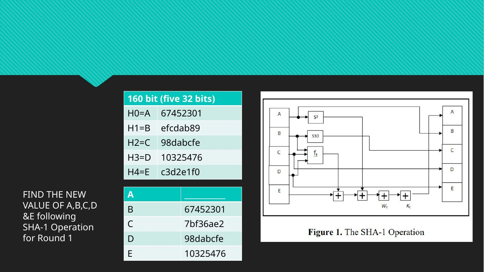
SHA-1 keeps five 32-bit working words A through E. In each round the words are updated; the old A becomes the new B and the old B is rotated left 30 bits to form the new C.
Example: With old B = efcdab89, the new C is 7bf36ae2.
- SHA-1 state update: In the first round, the old A becomes new B and rotating the old B left by 30 bits gives new C.
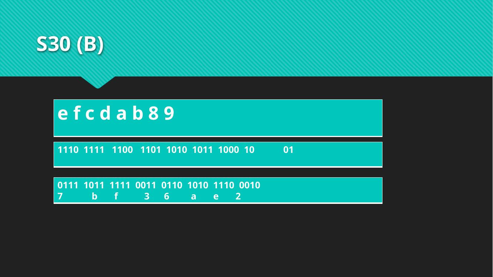
ROTL30 moves each bit 30 places to the left within a 32-bit word and wraps the bits around. It is the same bit arrangement as rotating right by two.
Example: ROTL30(efcdab89) = 7bf36ae2.
- 32-bit left rotation: A rotate-left moves bits around a fixed 32-bit word, wrapping the bits that leave the left end back to the right.
- SHA-1 first rotation example: Rotating efcdab89 left by 30 bits produces 7bf36ae2.
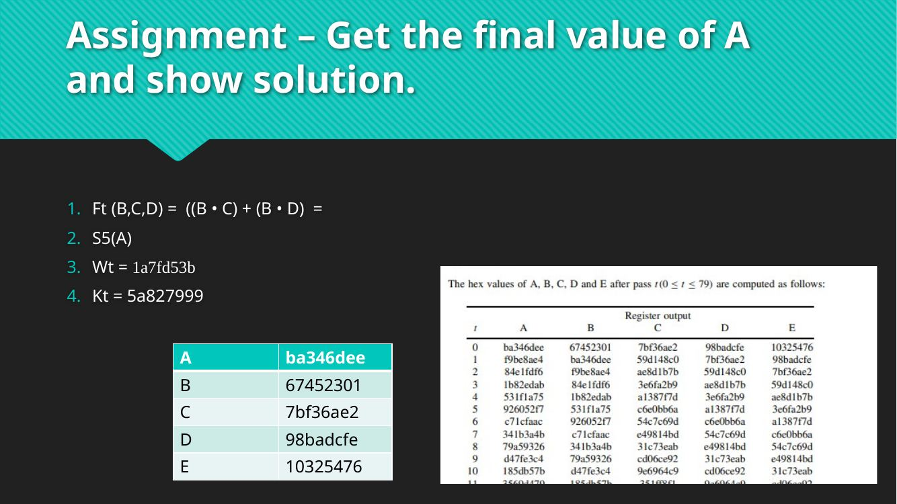
For the given initial state and first message word, use the first-round Boolean function, ROTL5(A), E, W0, and K0. Add them modulo 2^32 to obtain the new A.
Example: The first new A is ba346dee; new B = 67452301 and new C = 7bf36ae2.
- SHA-1 first-round example: With the slide's sample and standard initial state, the first new A is ba346dee.
Lesson cheat sheet
Use this as a quick review before your quiz.
| Term or idea | Remember it this way |
|---|---|
| Authentication | Verify a claimed identity or origin; authorization decides access. |
| Hash / digest | A hash maps arbitrary input to a fixed-size output. It is not reversible encryption. |
| Integrity vs authentication | A trusted digest can detect changes; use a suitable MAC or signature for authenticated integrity. |
| MD4 / MD5 / SHA-1 | Historical algorithms with collision weaknesses; do not choose them for new collision-resistant security. |
| SHA-1 dimensions | 512-bit input blocks; five 32-bit state words; 80 rounds; 160-bit digest. |
| SHA-1 padding | Append 1 bit, enough zero bits, then the original length as a 64-bit value. |
| Schedule correction | W[t] = ROTL1(W[t−3] XOR W[t−8] XOR W[t−14] XOR W[t−16]). |
| First-round function | (B AND C) OR ((NOT B) AND D). |
| Worked example | Message 1a7fd53b4c is 40 bits. Its first new A is ba346dee; new C is 7bf36ae2. |
References for corrections
NIST Secure Hash Standard (FIPS 180-4) · NIST policy on hash functions
The quiz has 35 multiple-choice questions and 12 true-or-false questions. You’ll see the answer and explanation as soon as you choose.
Explanations are study aids based on the provided presentation. Examples are illustrative.